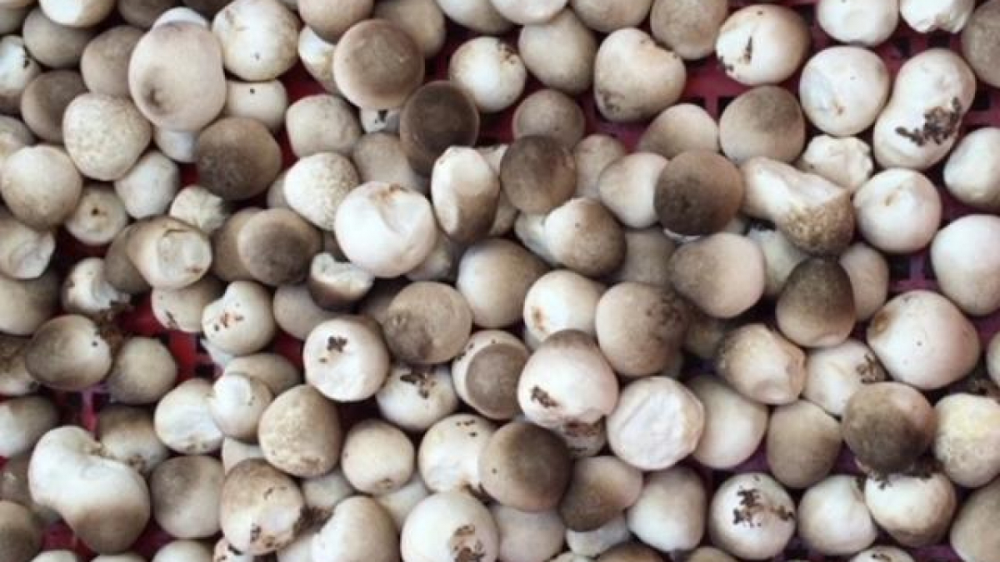

Nấm rơm1.Nấm rơm là gì ?
- Nấm rơm hay nấm mũ rơm là một loài nấm trong họ nấm lớn sinh trưởng và phát triển từ các loại rơm rạ. Nấm gồm nhiều loài khác nhau, có đặc điểm hình dạng khác nhau như có loại màu xám trắng, xám, xám đen… kích thước đường kính "cây nấm" lớn, nhỏ tùy thuộc từng loại.Là loại nấm giàu dinh dưỡng.

Xem Ở ĐÂY. 2.Nấm rơm ăn có tốt không?
- Theo Đông y, nấm rơm có vị ngọt, tính hàn, công năng bổ tỳ, ích khí, tiêu thực, khử nhiệt, tăng sức đề kháng, hạ cholesterol máu. 3.Công dụng
- Nấm rơm có tác dụng giải cảm, hạ sốt, tăng cường sữa cho phụ nữ trong thời kỳ sinh đẻ, hỗ trợ sức khỏe của em bé và làm cho gan, dạ dày khỏe mạnh |